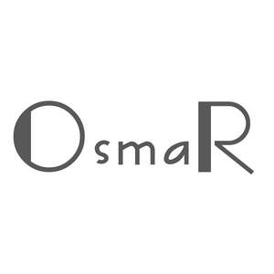

Trade Mark Journal No.2025/032 8 August 2025
UK00004240752 29 July 2025 (6,12,18,21,35)

- Class 6
- Ropes of metal; ironmongery; split rings of common metal for keys; bag hangers of metal; locks of metal for vehicles; spring locks; padlocks of metal, other than electronic; hooks [metal hardware]; tool chests of metal, empty; signboards of metal; cattle chains; bells for animals; traps for wild animals; buckles of common metal [hardware].
- Class 12
- Trolleys; bags adapted for pushchairs; carts; wheelchairs; saddlebags adapted for bicycles; cup holders for vehicles; security harness for vehicle seats; vehicle seats; safety seats for children, for vehicles; safety belts for vehicle seats.
- Class 18
- Reins for guiding children; suitcase packing organizers; backpacks for carrying infants; bags; slings for carrying infants; bags for sports; trunks [luggage]; walking sticks; leather leashes; clothing for pets; harness straps; leathercloth.
- Class 21
- Jugs; demijohns; kettles, non-electric; mug cosies; drinking bottles for sports; buttonhooks; insulating flasks; cages for household pets; teapots of precious metal.
- Class 35
- Advertising; presentation of goods on communication media, for retail purposes; arranging and conducting of commercial events; organization of trade fairs; marketing research; business organization consultancy; import-export agency services; sponsorship search; wholesale services for pharmaceutical, veterinary and sanitary preparations and medical supplies; retail services for pharmaceutical, veterinary and sanitary preparations and medical supplies.
Lian Yang Plastic （Shenzhen） Co., Ltd.
Representative: RED POMELO DOCUMENTATION SERVICEST LIMITED